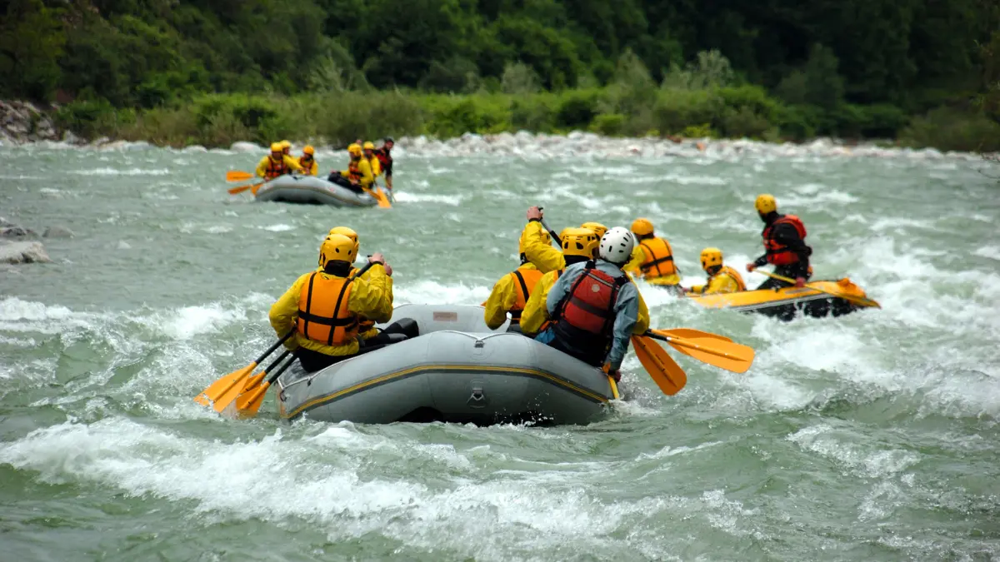
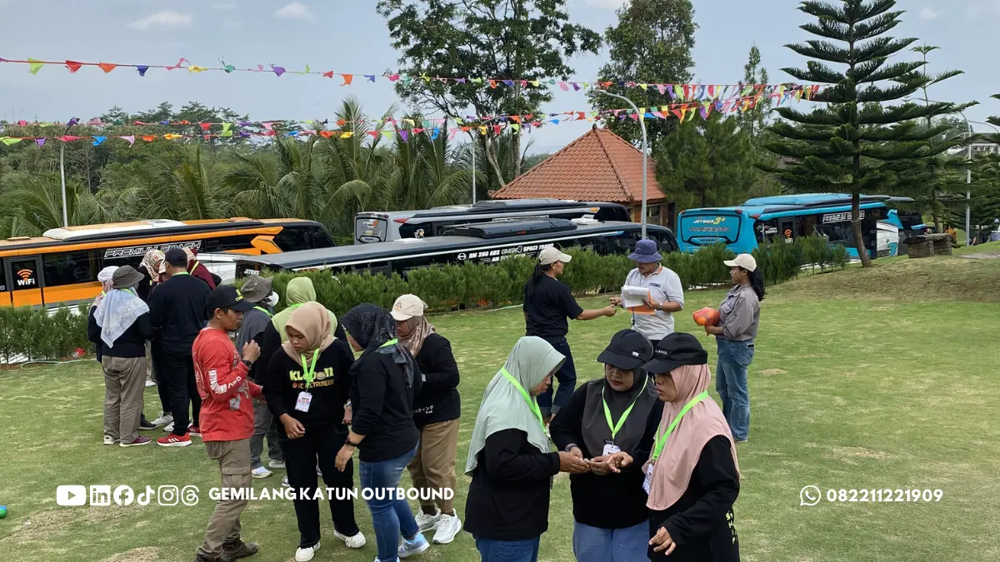

1. Apa Itu Outbound? Pengertian Dasar & Filosofi Experiential Learning
Outbound training di pegunungan Batu Malang adalah metode pembelajaran dan pengembangan sumber daya manusia (SDM) yang memanfaatkan alam terbuka Kota Batu dan Malang sebagai media simulasi berstandar experiential learning bersama Vendor Outbound Batu Malang Terbaik. Melalui serangkaian permainan kelompok terstruktur (*structured experiential games*), peserta dilatih untuk menghadapi tantangan nyata yang mencerminkan hambatan komunikasi, kepemimpinan, dan kerja tim di tempat kerja.
Secara historis, metode outbound berakar dari konsep Outward Bound yang digagas oleh pakar pendidikan Kurt Hahn pada tahun 1941 di Wales. Hahn merancang simulasi ketahanan fisik dan mental luar ruang bagi para pelaut muda agar memiliki jiwa kepemimpinan tangguh dan solidaritas tinggi saat menghadapi krisis di lautan.
Dalam konteks korporat modern di Indonesia, outbound telah bertransformasi menjadi salah satu instrumen paling efektif untuk Organization Development (OD). Alih-alih sekadar mendengarkan ceramah teori di dalam ruang kelas seminar yang membosankan, peserta outbound mengalami langsung dinamika emosional saat bekerja sama mencapai target bersama.

Team Building vs Fun Games: Kenali Perbedaannya Sebelum Memilih Paket
Panduan komparasi mendalam agar Anda tidak salah memilih antara paket rekreasi santai atau pelatihan berorientasi kompetensi.
2. Siklus Pembelajaran Kolb: Mengapa Belajar di Alam Terbuka Sangat Efektif?
Keberhasilan program outbound tidak diukur dari seberapa lelah fisik peserta, melainkan seberapa dalam pemahaman (*insight*) yang berhasil diinternalisasi. Pendekatan ini mengacu pada Kolb's Experiential Learning Model yang terdiri dari 4 tahapan berkesinambungan:
- Concrete Experience (Mengalami Langsung): Peserta terjun dalam simulasi games yang dirancang khusus tanpa mengetahui solusi akhirnya secara instan.
- Reflective Observation (Refleksi Bersama): Fasilitator mengajak peserta berhenti sejenak untuk mengevaluasi apa yang terjadi selama simulasi: apa yang berjalan lancar dan di mana letak kendalanya.
- Abstract Conceptualization (Penarikan Konsep Kerja): Peserta menarik benang merah antara dinamika simulasi dengan persoalan riil di kantor (misalnya: miskomunikasi antar-divisi saat *deadline* ketat).
- Active Experimentation (Penerapan Tindakan Baru): Peserta menguji strategi baru pada simulasi berikutnya dan berkomitmen menerapkannya di tempat kerja.

Sesi debriefing yang dipandu fasilitator profesional adalah nyawa dari kegiatan outbound, mengubah permainan fisik menjadi insight produktivitas nyata.
Ketinggian dataran tinggi Kota Batu (700–1.700 mdpl) dan suhu udara 18°C–25°C menyediakan iklim ideal untuk program Team Building Perusahaan dan Fun Games Outbound yang menyegarkan pikiran peserta.
3. 5 Manfaat Strategis Outbound Training untuk Karyawan & Organisasi
A. Meruntuhkan Sekat Komunikasi (Silo Mentality)
Di banyak korporasi, sekat birokrasi dan ego sektoral antar-divisi (misalnya antara divisi Marketing dan Operasional) sering menghambat kelancaran proyek. Dalam games outbound seperti Blind Lead atau Pipeline Challenge, peserta dituntut berkomunikasi secara presisi dan mendengarkan aktif tanpa memandang hierarki jabatan formal.
B. Mengasah Kepemimpinan Situasional (*Situational Leadership*)
Simulasi outbound memberikan panggung bagi setiap individu untuk memimpin dan dipimpin. Program Leadership Camp Perusahaan secara khusus melatih kepekaan manajerial dalam mengalokasikan sumber daya, mendelegasikan tugas, dan mengambil keputusan kritis di bawah tekanan waktu.
C. Melatih Kecepatan & Ketepatan Pemecahan Masalah
Setiap tantangan outbound dirancang dengan aturan main (*rules*) dan keterbatasan (*constraints*). Tim dipaksa berpikir kreatif (*out of the box*), menguji hipotesis dengan cepat, dan beradaptasi saat rencana awal tidak berjalan sesuai ekspektasi.
D. Membangun Rasa Percaya & Solidaritas Tinggi (*Trust Building*)
Hubungan kerja yang harmonis hanya bisa tumbuh di atas fondasi rasa saling percaya. Melalui simulasi seperti Trust Fall atau Web of Trust, karyawan belajar mengandalkan rekan kerjanya dan bertanggung jawab penuh atas keselamatan anggota timnya.
E. Mengurangi Kejenuhan Kerja & Meningkatkan Motivasi (*Re-Energizing*)
Paparan udara segar di pegunungan seperti kawasan Batu, Trawas, atau Bromo membantu meredakan stres kerja harian (*burnout*). Setelah kegiatan outbound, peserta kembali ke kantor dengan energi segar, motivasi baru, dan hubungan pertemanan yang lebih hangat.
4. Matriks Komparasi: Outbound Rekreasi vs Outbound Training Kompetensi
Agar anggaran pengadaan kegiatan SDM tepat sasaran, pahami perbedaan mendasar antara outbound rekreasi dan outbound pelatihan kompetensi pada tabel berikut:
| Parameter Pembeda | Outbound Rekreasi (Fun Games) | Outbound Training (Team Building) |
|---|---|---|
| Tujuan Utama | Penyegaran pikiran, keceriaan, mencairkan suasana (*ice breaking*) | Peningkatan kompetensi SDM, perubahan perilaku, resolusi konflik |
| Kedalaman Modul | Permainan ringan, kompetisi seru antar kelompok | Simulasi bertingkat dengan analisis problem solving dan strategi |
| Sesi Debriefing | Singkat atau bersifat seremonial di akhir acara | Mendalam di setiap pos simulasi dipandu Master Fasilitator |
| Durasi Ideal | Half-day hingga Full-day (4 – 7 jam) | Minimal 2 Hari 1 Malam (2D1N) atau 3 Hari 2 Malam (3D2N) |
| Rekomendasi Paket | Paket Fun Games Gathering | Paket Team Building Corporate |

Panduan Memilih Vendor Outbound Profesional & Berlisensi BNSP
Kriteria legalitas, standar safety alat, dan checklist pemilihan Event Organizer outbound terpercaya di Jawa Timur.
5. Tahapan Pelaksanaan Outbound yang Efektif Bersama Vendor Outbound ID
Untuk memastikan setiap rupiah anggaran menghasilkan dampak terukur, tim konsultan Vendor Outbound ID menerapkan alur kerja terstruktur:
- 1. Training Needs Analysis (TNA): Kami berdiskusi dengan tim HRD untuk memetakan tantangan internal (misal: komunikasi kurang cair, target omzet baru, atau integrasi unit bisnis).
- 2. Custom Program & Venue Selection: Menyusun skenario simulasi dan memilih lokasi terbaik di Jawa Timur (Malang, Batu, Mojokerto, Bromo, atau Banyuwangi) sesuai profil peserta.
- 3. Safety First Execution: Pelaksanaan dipimpin oleh Game Master dan Fasilitator bersertifikat BNSP dengan rasio pengawasan aman dan dukungan tim medis P3K.
- 4. Post-Event Action Plan: Penyerahan laporan dinamika kelompok (*behavioral assessment*) serta dokumentasi foto & video sinematik Full HD.
Ingin Merancang Program Outbound Sesuai Target Perusahaan Anda?
Konsultasikan kebutuhan kegiatan tim Anda bersama konsultan berpengalaman kami secara gratis. Kami siap mengirimkan proposal penawaran, rundown acara, dan estimasi biaya dalam 1x24 jam.
Hubungi Kami via WhatsAppKesimpulan
Poin Kunci Memaksimalkan Kegiatan Outbound
Outbound bukan sekadar rekreasi luar ruangan, melainkan investasi strategis dalam membangun fondasi manusia yang solid bagi pertumbuhan organisasi.
- Pastikan tujuan program terdefinisi dengan jelas sejak awal (apakah sekadar *fun* atau *competency development*).
- Pilih vendor outbound yang memiliki fasilitator bersertifikasi resmi BNSP dan menerapkan SOP *safety-first*.
- Jelajahi berbagai paket unggulan kami seperti Paket Team Building Perusahaan dan Outbound + Rafting Kasembon untuk pengalaman terbaik.
Pertanyaan yang Sering Diajukan (FAQ)

Arby Ardiansyah
Praktisi pengembangan SDM dan perancang program experiential learning dengan pengalaman lebih dari 8 tahun memfasilitasi ratusan kegiatan outbound korporat, BUMN, dan institusi pendidikan di seluruh Jawa Timur.